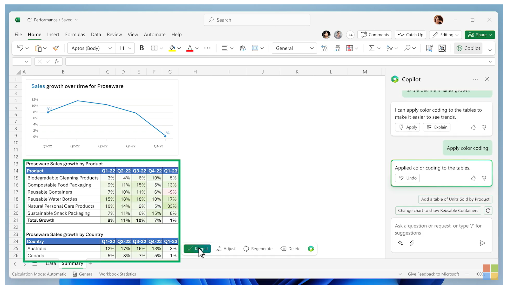

I work on AI + dev tools.
Products everywhere are integrating ChatGPT-like experiences. However, many of them feel bolted on and not really a first-class part of the experience.
When you ask a colleague to come over and help you with something on your computer, what do they do?
They point.
They direct your attention.
They walk you through as you go.
Existing products already have such rich UIs, yet most LLM-based features are only capable of injecting code or text in a designated place.
Imagine if the AI could annotate parts of the screen or interact with any UI element. The output doesn't have to be constrained to a single pane.
For example, in a photo editor, I would not want an AI to only produce the end result that it thinks I want. Rather, I want it to apply individual steps that it takes to get the desired effect in the existing editor's history pane and layers pane. That way I can see how it got there and can make adjustments. These existing features already have so much value, they just need to be integrated into the AI experience.
Today's announcement video of Copilot for Microsoft Office shows a great integration of the chat experience with the entire Excel application:
It is important to not trap the user into the chat window. Let them use the rest of the application too! This will take time for deeper integrations to happen, and it is what will really make these AI features shine.
See more of my recent ramblings about AI: